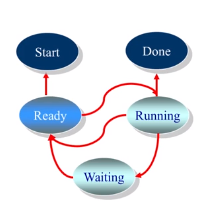

进程管理
- 进程（Process）描述
- 进程状态(State)
- 线程（Thread）
- 进程间通信（Inter-Process Communication）
- 进程互斥与同步
- 死锁（DeadLock）
进程：一个具有一定独立功能的程序在一个数据集合上的一次动态执行过程
进程的组成：
- 程序的代码；
- 程序处理的数据；
- 程序计数器中的值，指示下一条将运行的指令；
- 一组通用的寄存器的当前值，堆，栈；
- 一组系统资源（如打开的文件）
总之，进程包含了正在运行的程序的所有状态信息。
进程和程序的联系
- 程序是产生进程的基础
- 程序的每次运行构成不同的进程
- 进程是程序功能的体现
- 通过多次执行，一个程序可对应多个进程；通过调用关系，一个进程可包括多个程序
进程与程序的区别
进程是动态的，程序是静态的；程序是有序代码的集合；进程是程序的执行，进程有核心态/用户态
进程是暂时的，程序是永久的；进程是一个状态变化的过程，程序是可长久保存的
进程与程序的组成不同：进程的组成包括程序，数据和进程控制（即进程状态信息）
进程的特点
动态性：可动态的创建，结束进程；
并发性：进程可以被独立调度并占用处理机运行；并发并行；
独立性：不同进程的工作不互相影响；
制约性：因访问共享数据/资源或进程间同步而产生制约
程序 = 算法 + 数据结构
描述进程的数据结构：进程控制块（Process Control Block，PCB）
操作系统为每个进程都维护了一个PCB，用来保存与该进程有关的各种状态信息
进程控制结构
进程控制块：操作系统管理控制进程运行所用的信息集合。操作系统用PCB来描述进程的基本情况以及运行变化的过程，PCB是进程存在的唯一标志。
使用进程控制块
进程的创建：为该进程生成一个PCB
进程的终止：回收它的PCB
进程的组织管理：通过对PCB的组织管理来实现
PCB包含一下三大类信息：
（一）进程标识信息。 如本进程的标识，本进程的产生者标志（父进程标识）；用户标识。
（二）处理机状态信息保存区。保存进程的运行现场信息：
用户可见寄存器，用户程序可以使用的数据，地址等寄存器。
控制和状态寄存器，如程序计数器（PC），程序状态字（PSW）。
栈指针，过程调用/系统调用/中断处理和返回时需要用到它们。
（三）进程控制信息：
调度和状态信息，用于操作系统调度进程并占用处理机使用。
进程间通信，为支持进程间的与通信相关的各种标识，信号，信件等，这些信息存在接收方的进程控制块中。
存储管理信息，包含有指向本进程映像存储空间的数据结构。
进程所用资源，说明由进程打开、使用的系统资源，如打开的文件等。
有关数据结构连接信息，进程可以连接到一个进程队列中，或连接到相关的其他进程的PCB。
PCB的组织方式
链表：同一状态的进程其PCB成一个链表，多个状态对应多个不同的链表（各状态的进程形成不同的链表：就绪链表、阻塞链表）
索引表：同一状态的进程归入一个index表（由index指向PCB），多个状态对应对个不同的index表（各状态的进程形成不同的索引表：就绪索引表、阻塞索引表）
进程状态
进程的生命期管理
进程状态变化模型
进程挂起模型
进程的生命期管理
进程创建
进程运行
进程等待
进程唤醒
进程结束
进程创建
引起进程创建的3个主要事件：
- 系统初始化时
- 用户请求创建一个新进程
- 正在运行的进程执行了创建进程的系统调用
进程运行
内核选择一个就绪的进程，让它占用处理机并执行
- 为何选择？
- 如何选择？
进程等待
在以下情况下，进程等待（阻塞）：
- 请求并等待系统服务，无法马上完成
- 启动某种操作，无法马上完成
- 需要的数据没有到达
进程只能自己阻塞自己，因为只有进程自身才能知道何时需要等待某种事件的发生
进程唤醒
唤醒进程的原因：
- 被阻塞进程需要的资源可被满足
- 被阻塞进程等待的事件到达
- 将该进程的PCB插入到就绪队列
进程只能被别的进程或操作系统唤醒。
进程结束
在以下4种情形下，进程结束：
- 正常退出（自愿的）
- 错误退出（自愿的）
- 致命错误（强制性的）
- 被其他进程所杀（强制性的）

进程状态变化模型
进程的三种基本状态：
进程在生命结束前处于且仅处于三种基本状态之一，不同系统设置的进程状态数目不同
运行状态（Running）：当一个程序正在处理机上运行时
就绪状态（Ready）：一个进程获得了除处理机之外的一切所需资源，一旦得到处理机即可运行
等待状态（又称阻塞状态Blocked）：一个进程正在等待某个事件而暂停运行时。如等待某资源，等待输入/输出完成。
进程的其他基本状态：
创建状态（New）：一个进程正在被创建，还没被转到就绪状态之前的状态
结束状态（Exit）：一个进程正在从系统中消失时的状态，这是因为进程结束或由于其他原因所导致的
进程挂起
Why？合理且充分地利用系统资源。
进程在挂起状态时，意味着进程没有占用内存空间。处于挂起状态的进程映像在磁盘上。
挂起状态
阻塞挂起状态：进程在外存并等待某事件的出现；
就绪挂起状态：进程在外存，但只要进入内存，即可运行；
与挂起相关的状态转换
挂起（Suspend）：把一个进程从内存存到外存；可能有以下几种情况：
阻塞到阻塞挂起：没有进程处于就绪状态或就绪进程要求更多内存资源时，会进行这种转换，以提交新进程或运行就绪进程
就绪到就绪挂起：当有高优先级阻塞（系统认为会很快就绪的）进程和低优先就绪进程时，系统会选择挂起低优先级就绪进程
运行到就绪挂起：对抢先式分时系统，当有高优先级阻塞挂起进程因事件出现而进入就绪挂起时，系统可能会把运行进程转到就绪挂起状态
在外存时的状态转换：
阻塞挂起到就绪挂起：当有阻塞挂起进程因相关事件出现时，系统会把阻塞挂起进程转换为就绪挂起进程。
解挂/激活（Activate）：把一个进程从外存转入到内存；可能有以下几种情况：
就绪挂起到就绪：没有就绪进程或挂起就绪进程优先级高于就绪进程时，会进行这种转换
阻塞挂起到阻塞：当一个进程释放足够内存时，系统会把一个高优先级阻塞挂起（系统认为会很快出现所等待的事件）进程转换为阻塞进程；
从进程的观点来看OS：用户进程、磁盘管理进程、中断进程……
状态队列
由操作系统来维护一组队列，用来表示系统当中所有进程的当前状态；
不同的状态分别用不同的队列表示（就绪队列、各种类型的阻塞队列）；
每个进程的PCB都根据它的状态加入到相应的队列当中，当一个进程的状态发生变化时，它的PCB从一个状态队列中脱离出来，加入到另外一个队列中。